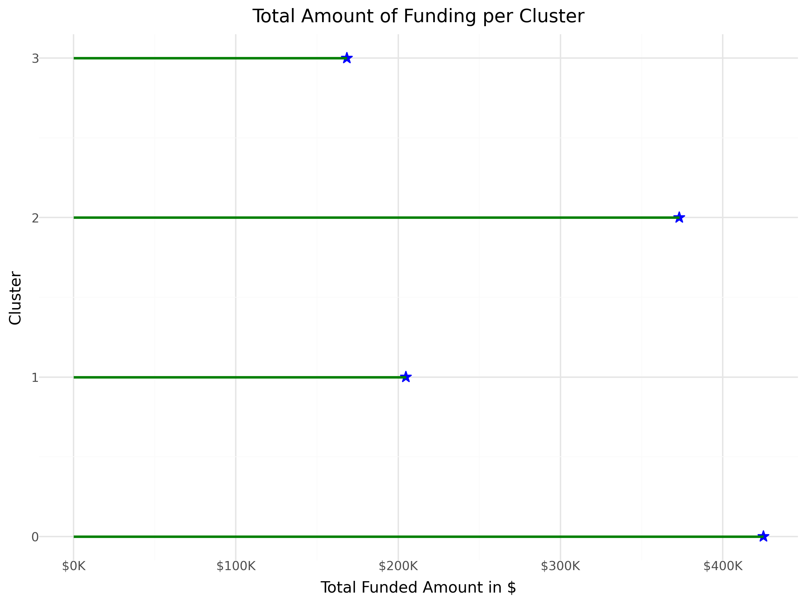
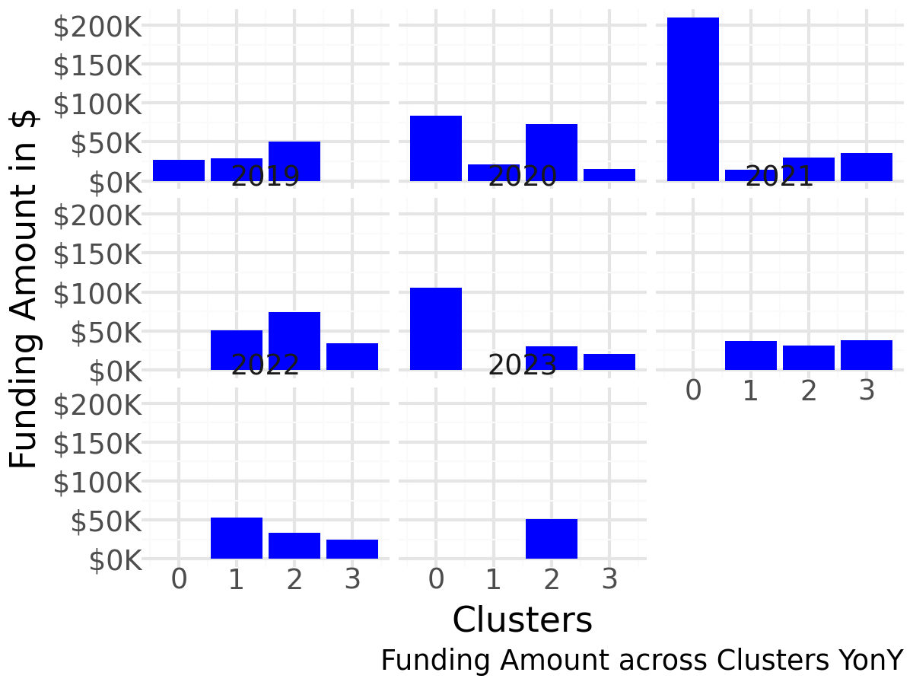
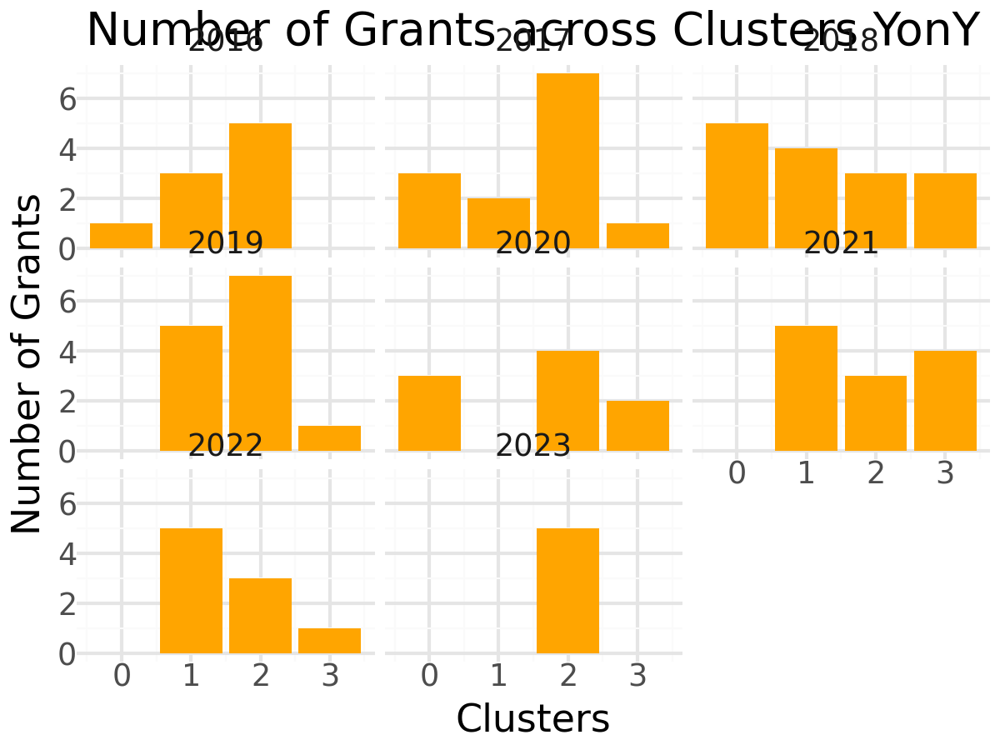
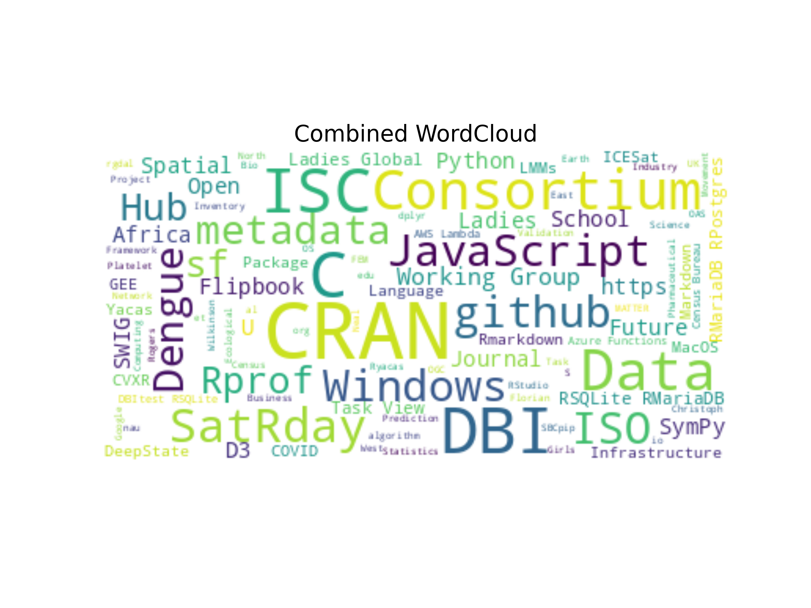
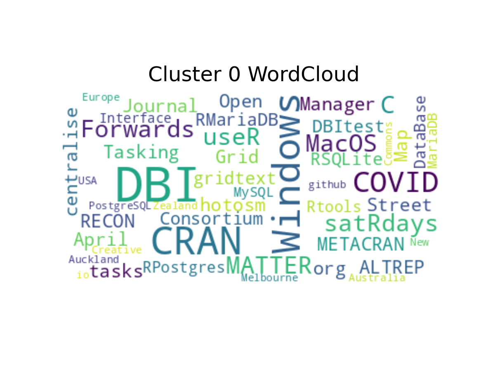
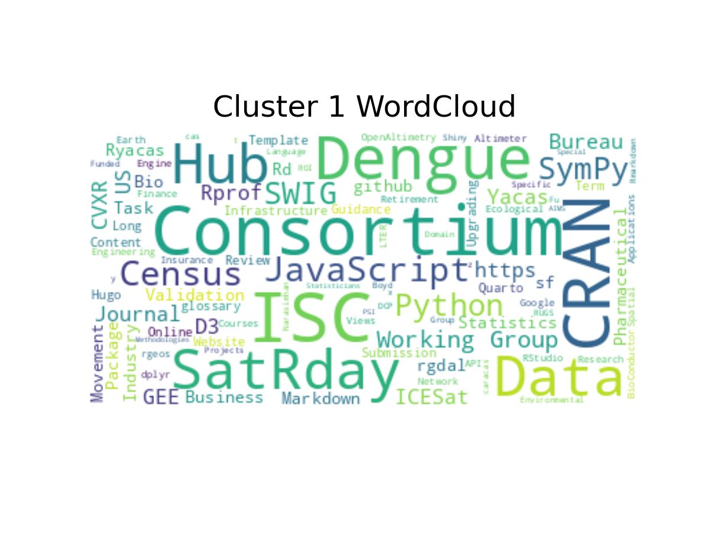
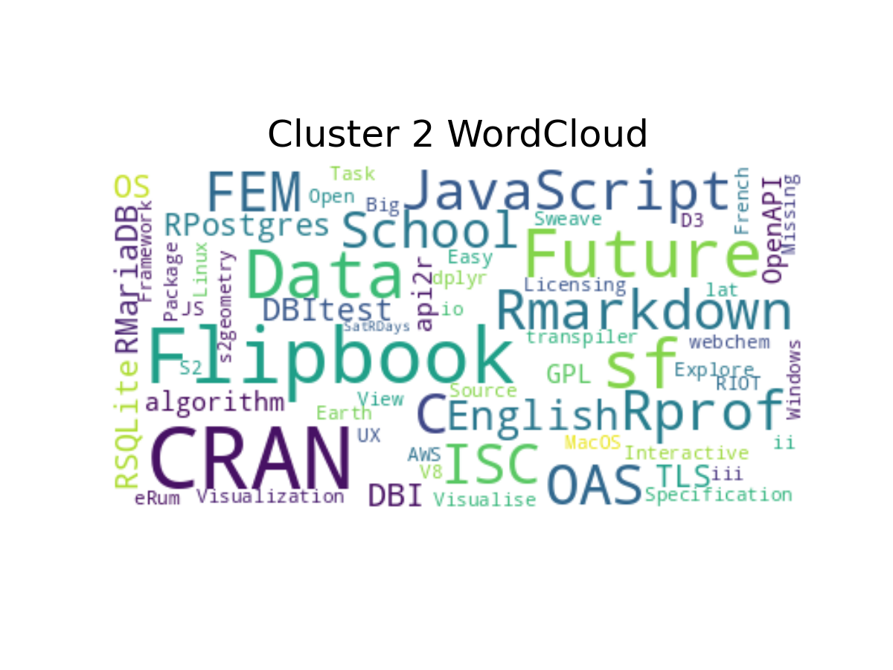
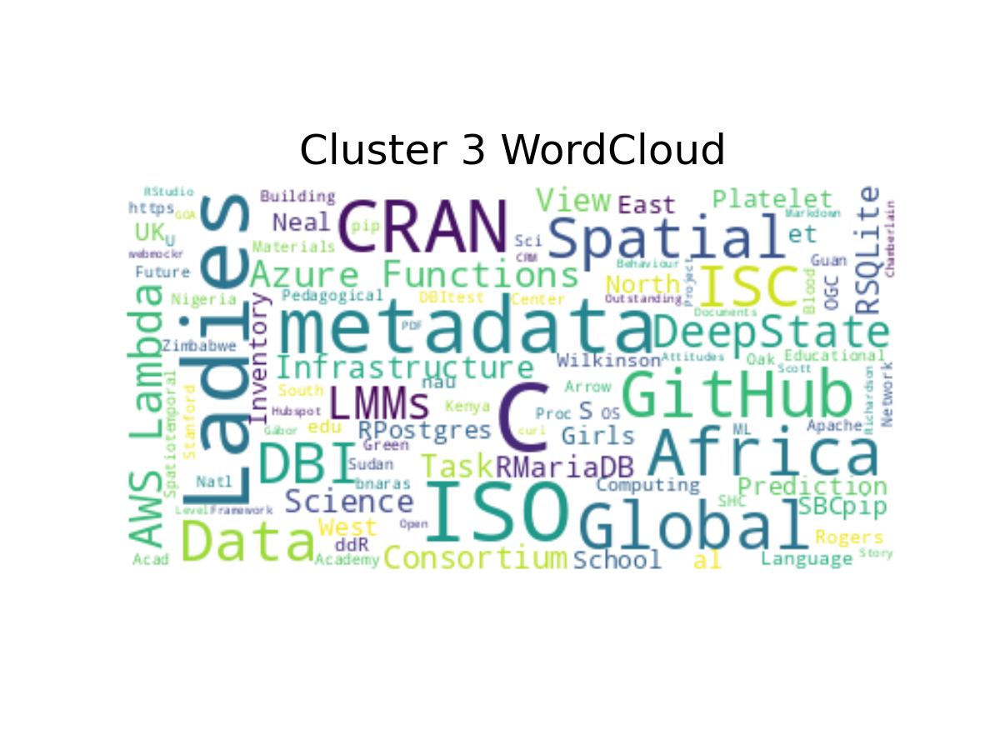

import pandas as pd
import numpy as np
import ssl
from plotnine import *
from dfply import *
from wordcloud import *
import matplotlib.pyplot as plt
import spacy
import spacy.cli
spacy.cli.download("en_core_web_sm")
nlp = spacy.load("en_core_web_sm")
from sklearn.pipeline import Pipeline
from sklearn.preprocessing import StandardScaler
from sklearn.cluster import KMeansTidy Tuesday - R Consortium ISC Grants
20th Feb 2024
0. Loading Libraries
1. Data Loading
ssl._create_default_https_context = ssl._create_unverified_context
isc_grants = pd.read_csv("https://raw.githubusercontent.com/rfordatascience/tidytuesday/master/data/2024/2024-02-20/isc_grants.csv")
# Displaying first 5 rows before data transformation
isc_grants.head(5)| year | group | title | funded | proposed_by | summary | website | |
|---|---|---|---|---|---|---|---|
| 0 | 2023 | 1 | The future of DBI (extension 1) | 10000 | Kirill Müller | This proposal mostly focuses on the maintenanc... | NaN |
| 1 | 2023 | 1 | Secure TLS Communications for R | 10000 | Charlie Gao | The project aims to implement secure connectio... | NaN |
| 2 | 2023 | 1 | volcalc: Calculate predicted volatility of che... | 12265 | Kristina Riemer | This ISC funded project focuses on the develop... | NaN |
| 3 | 2023 | 1 | autotest: Automated testing of R packages | 3000 | Mark Padgham | The project aims to develop an R package to au... | NaN |
| 4 | 2023 | 1 | api2r: An R Package for Auto-Generating R API ... | 15750 | Jon Harmon | This project aims to develop an R package call... | NaN |
2. Data Transformation & Clustering
Code for Transformation and Clustering
# Extracting Proper Nouns using prebuilt model of spacy
isc_grants['keywords']= [[token.text for token in doc if token.pos_ == "PROPN"] for doc in isc_grants.summary.map(nlp)]
# Extracting L2_form for Prpoer Nouns using prebuilt model of spacy
isc_grants['L2_form_keywords'] = [[token.vector_norm for token in doc if token.pos_ == "PROPN"] for doc in isc_grants.summary.map(nlp)]
# Adding the numbers of L2Form to arrive at a final number
isc_grants['L2_sum_keywords'] = isc_grants['L2_form_keywords'].map(lambda x : np.sum(x))
# Kmeans Clustering Code; I like using pipelines.
pipe=Pipeline(steps=[
('standarsclar',StandardScaler()),
('kmeans',KMeans(n_clusters=4, random_state=42))
])
isc_grants['clusters']=pipe.fit_predict(isc_grants[['funded','L2_sum_keywords']])
# Displaying first 5 rows after data transformation
isc_grants.head(5)| year | group | title | funded | proposed_by | summary | website | keywords | L2_form_keywords | L2_sum_keywords | clusters | |
|---|---|---|---|---|---|---|---|---|---|---|---|
| 0 | 2023 | 1 | The future of DBI (extension 1) | 10000 | Kirill Müller | This proposal mostly focuses on the maintenanc... | NaN | [DBI, DBItest, RSQLite, RMariaDB, RPostgres, OS] | [8.515169, 8.737299, 9.32899, 7.872729, 7.7452... | 50.481686 | 2 |
| 1 | 2023 | 1 | Secure TLS Communications for R | 10000 | Charlie Gao | The project aims to implement secure connectio... | NaN | [TLS] | [7.7507687] | 7.750769 | 2 |
| 2 | 2023 | 1 | volcalc: Calculate predicted volatility of che... | 12265 | Kristina Riemer | This ISC funded project focuses on the develop... | NaN | [ISC, algorithm] | [8.402423, 8.565787] | 16.968210 | 2 |
| 3 | 2023 | 1 | autotest: Automated testing of R packages | 3000 | Mark Padgham | The project aims to develop an R package to au... | NaN | [GPL-3, CRAN] | [7.7737813, 7.8731694] | 15.646951 | 2 |
| 4 | 2023 | 1 | api2r: An R Package for Auto-Generating R API ... | 15750 | Jon Harmon | This project aims to develop an R package call... | NaN | [api2r, OpenAPI, Specification, OAS, OAS, R.] | [7.429026, 6.894724, 7.6077356, 9.437281, 7.47... | 47.943073 | 2 |
3. Plotting
3.1. Total Funding Per Cluster
Code for Segment Plot by Cluster
plot = (isc_grants >>
group_by(X.clusters) >>
summarize(fun = np.sum(X.funded), count = n(X.clusters) ) >>
ggplot(aes(y = 'clusters' , x = 'fun' )) +
geom_point(shape="*",size=4, color="blue") + geom_segment(aes(xend=0, yend='clusters'), color="green", size=1) + theme_minimal() +
labs(
x = "Total Funded Amount in $",
y = "Cluster",
title = "Total Amount of Funding per Cluster"
)
+scale_x_continuous(labels=lambda x: ['${:.0f}K'.format(i / 1000) for i in x])
)
plot.save("Segment.png", width=8, height=6)
Interpreation
- Cluster
0is characterized by a high level of funding, whereas Cluster3exhibits relatively lower funding.
3.2. Total Funding vs Total Grants Relationship
Code for Scatter Plot between funding amount and grants
plot = (isc_grants >>
group_by(X.year ) >>
summarize(fun = np.sum(X.funded), count = n(X.clusters) ) >>
ggplot(aes(x = 'fun' , y = 'count' )) +
geom_point(color="blue") + geom_smooth(method='lm',se=False,color="green") +
theme_minimal() +
labs (
x = "Funding Amount",
y = "Number of Grants",
title = "Linear Relationship ",
subtitle = "b/w #grants & funding$"
) +
scale_x_continuous(labels=lambda x: ['${:.0f}K'.format(i / 1000) for i in x])
)
plot.save("Funding.png", width=8, height=6)
Interpreation
- A clear linear relationship is evident between the number of grants and the funding amount
3.3. Funding Amount Per Cluster Over Years
Code for Plot of Funding Amount per Cluster Over Years
plot1 = (isc_grants >>
group_by(X.year , X.clusters) >>
summarize(fun = np.sum(X.funded), count = n(X.clusters) ) >>
ggplot(aes(x = 'clusters' , y = 'fun' )) +
geom_col(fill="blue") +
facet_wrap('~year') + theme_minimal() + theme(figure_size=(4, 3)) +
scale_y_continuous(labels=lambda x: ['${:.0f}K'.format(i / 1000) for i in x]) +
labs (
x = "Clusters",
y = "Funding Amount in $",
caption = "Funding Amount across Clusters YonY"
)
)
plot1.save("Funding_Clusters.png", width=4, height=3)
plot2 = (isc_grants >>
group_by(X.year , X.clusters) >>
summarize(fun = np.sum(X.funded), count = n(X.clusters) ) >>
ggplot(aes(x = 'clusters' , y = 'count' )) +
geom_col(fill="orange") +
facet_wrap('~year') + theme_minimal() + theme(figure_size=(4, 3)) +
labs (
x = "Clusters",
y = "Number of Grants",
caption = "Number of Grants across Clusters YonY"
)
)
plot2.save("Count_Clusters.png", width=4, height=3) 
Interpreation
- A nearly identical linear relationship between the number of grants and funding amount is apparent, indicating a consistent funding amount per grant.
- Furthermore, distinct funding values emerge across the clusters, highlighting variations in funding amounts despite similar numbers of grants within each cluster.
3.4. Combined WordCloud
Code for Combined Words of WordCloud
combined_text = ' '.join(isc_grants['keywords'].sum())
wordcloud = (
WordCloud(
max_font_size=50,
max_words=100,
background_color="white")
.generate(combined_text)
)
plt.figure(figsize=(8, 6))
plt.imshow(wordcloud, interpolation='bilinear')
plt.axis('off')
plt.title("Combined WordCloud",fontsize=16 )
plt.savefig('wordcloud_image.png') 
Interpreation
- The prevalence of
CRANandISCis noteworthy, and it would have been beneficial to exclude them for a more focused analysis. - Additionally, within the R consortium grants, there is notable diversity with the inclusion of topics such as
JavaScript,DBI, andPython. This suggests a robust research scope, particularly in the realm of multiple integrations.
3.4. WordCloud by Cluster
Code for WordCloud by Cluster
combined_text1 = ' '.join(isc_grants[isc_grants['clusters'] == 0]['keywords'].sum())
combined_text2 = ' '.join(isc_grants[isc_grants['clusters'] == 1]['keywords'].sum())
combined_text3 = ' '.join(isc_grants[isc_grants['clusters'] == 2]['keywords'].sum())
combined_text4 = ' '.join(isc_grants[isc_grants['clusters'] == 3]['keywords'].sum())
wordcloud1 = (
WordCloud(
max_font_size=50,
max_words=100,
background_color="white")
.generate(combined_text1)
)
wordcloud2 = (
WordCloud(
max_font_size=50,
max_words=100,
background_color="white")
.generate(combined_text2)
)
wordcloud3 = (
WordCloud(
max_font_size=50,
max_words=100,
background_color="white")
.generate(combined_text3)
)
wordcloud4 = (
WordCloud(
max_font_size=50,
max_words=100,
background_color="white")
.generate(combined_text4)
)
plt.figure(figsize=(4, 3))
plt.imshow(wordcloud1, interpolation='bilinear')
plt.axis('off')
plt.title("Cluster 0 WordCloud",fontsize=12)
plt.savefig('wordcloud_image1.png')
plt.figure(figsize=(4, 3))
plt.imshow(wordcloud2, interpolation='bilinear')
plt.axis('off')
plt.title("Cluster 1 WordCloud",fontsize=12)
plt.savefig('wordcloud_image2.png')
plt.figure(figsize=(4, 3))
plt.imshow(wordcloud3, interpolation='bilinear')
plt.axis('off')
plt.title("Cluster 2 WordCloud",fontsize=12)
plt.savefig('wordcloud_image3.png')
plt.figure(figsize=(4, 3))
plt.imshow(wordcloud4, interpolation='bilinear')
plt.axis('off')
plt.title("Cluster 3 WordCloud",fontsize=12)
plt.savefig('wordcloud_image4.png')  
 
Interpreation
- In first cluster we see
DBIandWindows. - In second cluster we see
PythonandJavaScript. - In third cluster we see
RSQLiteandRMariaDB. - In third cluster we see
LLMsandAWS.
Certainly, it is evident that clustering has provided valuable insights into the primary themes of research grants. The observation that the average funding amount per grant is relatively consistent does not imply the superiority of one research segment over another. Instead, it indicates that the number of research projects in the second and fourth segments is lower when compared to the first and third segments.